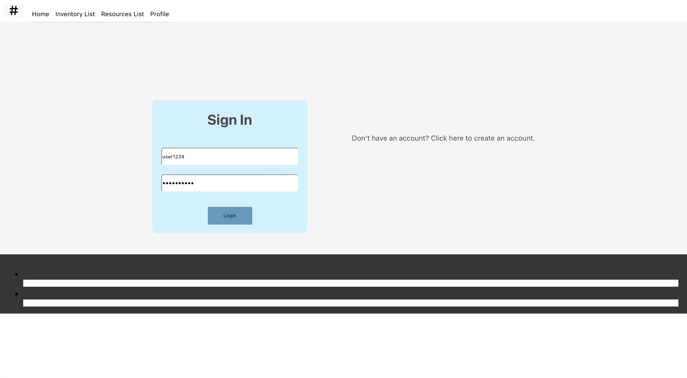
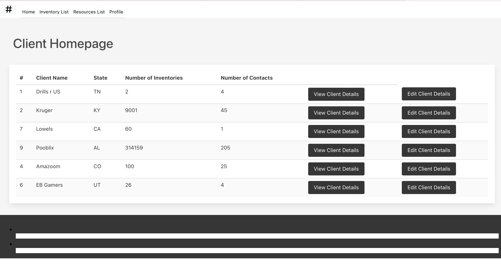

Projects Completed
Blog Post Column Project -2024
Introduction to a simple blog column for couples separated by distance, Two Time Zones, One Love. This blog is a digital embrace for those navigating the challenges and joys of long-distance love. Here, you'll find a supportive community where you can share your experiences, seek advice, and discover inspiration. We delve into the intricacies of maintaining strong connections, overcoming obstacles, and celebrating the unique beauty of LDRs. Our platform is built on the belief that love knows no bounds, and we're here to help you bridge the gap, one heartfelt post at a time.
Source in progressSimple Calculator React Application - 2024
This Simple Calculator is a React application showcasing my proficiency in building interactive user interfaces. Leveraging the useState hook, I've created a dynamic tool capable of performing basic arithmetic operations. This project demonstrates my understanding of React's component structure and state management, resulting in a clean, efficient, and user-friendly calculator. It's a practical example of how I apply front-end development principles to create functional and engaging web applications.
Source in progressMagic 8 Ball
This Python Magic 8 Ball application is a fun and interactive project demonstrating core programming concepts. By utilizing Python's random module, I created a virtual fortune teller that provides users with playful and unpredictable responses. This project showcases my ability to structure code, handle user input, and implement basic logic, making it a valuable addition to my programming portfolio.
Source in progressTypeScript Calculator Application
This TypeScript calculator project is a fundamental application showcasing my ability to leverage TypeScript's strong typing and object-oriented features. It provides a user-friendly interface for performing basic arithmetic operations, such as addition, subtraction, multiplication, and division. I implemented robust error handling to ensure accurate calculations and prevent unexpected behavior. The calculator's clean and intuitive design enhances user experience, making it a valuable addition to my portfolio.
Source in progressIP
I'm actively expanding my portfolio with a focus on enhancing my skills in new programming languages and cloud computing. I'm currently working on several exciting projects that will showcase my ability to be a developer! Stay tuned for updates as I continue to add more impressive examples of my work.
Source in progressIP
I'm actively expanding my portfolio with a focus on enhancing my skills in new programming languages and cloud computing. I'm currently working on several exciting projects that will showcase my ability to be a developer! Stay tuned for updates as I continue to add more impressive examples of my work.
Source in progress
Senior Project, Developing an Industrial Management System with Security - 2023
Created a management system that monitored inventories for various different companies or organizations using security. Utilized different components like React.js, SpringBoot, Bulma, JavaScript library to develop.
Link to Youtube for Demonstration  
Software Engineering, Group Project - ID Software - 2022
-Created a mobile application or QR code to make ID portable. Created this program using Java code.
Link in progressSimple Input Application using TypeScript - 2024
This TypeScript program effectively utilizes the object-oriented features to create a dynamic and user-friendly interface. By prompting the user for input, your program demonstrates its ability to handle various data types and present them in a visually appealing format. The use of color and equations enhances the overall user experience, making the output both informative and engaging. This simple yet effective program showcases the versatility of TypeScript in building interactive applications.
In progressCourses at Tennessee State Univerisity
BS in Computer Science - 2020-2023
- Intro to Computer Science
- Computer Programming I
- Computer Programming II
- Software Engineering
- Data Structures
- Programming Languages
- Discrete Math, Ethics Profession in Computing
- Data Communication and Computer Network
- Data Structures
- Algorithms
- Enterprise Computing
- Web based Application and Development
- Mgmt Information System
- Intro to the Theory of Computing
- Python Programming
MBA - 2023-Current
- Business Strategy & the Economic Environment
- Accounting and Business Decisions
- Managerial Economics
- Managerial Finance
- Marketing Management
- Management Evaluation Information Systens
- Operations Management
- Statistical Methods